Join co-hosts Taylor and Andrew as they discuss the amazing materials all around us!
The Materialism Podcast was born out of a shared desire between Andrew Falkowski and Taylor Sparks to offer an educational resource for the materials science community.
We were dissatisfied with many of the educational resources available at the time that are either overly simplistic or technical, with no in-between. In creating episodes, we strive to find a balance between accessible explanations of fundamental concepts and in-depth discussions about advanced materials and techniques. Topics are contextualized using a narrative structure that helps listeners understand the critical role that materials have played in society, and glimpse into what the future may hold for new materials.
What started as passing conversation in an elevator would become the most popular materials science podcast on the net - now running for over three years! During that time the team was joined by Jared Duffy, a mechanical engineering student, and Ramsey Issa, a Materials Science PhD student. The Materialism team records regularly in a small studio shed in Salt Lake City, Utah.
Our Favorite Episodes!
The unique materials that make photography possible: from rolled film to digital sensor arrays to optics.
Listen Now!A deep-dive into the science of various 3D printing techniques and the materials that make them possible.
Listen Now!materialism.podcast@gmail.com
@materialism.podcast
